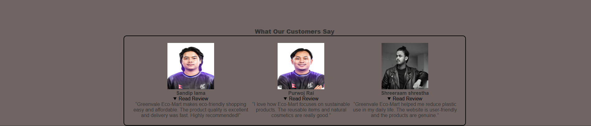
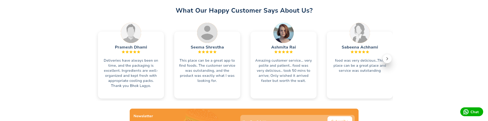
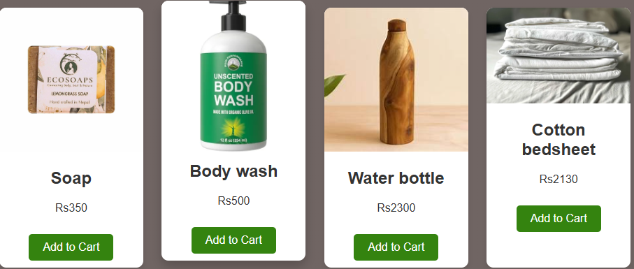
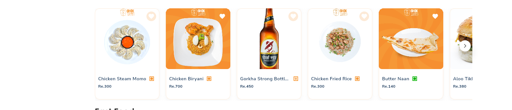
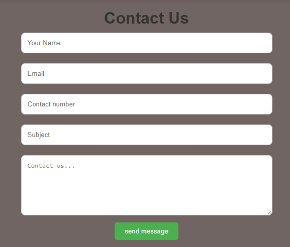
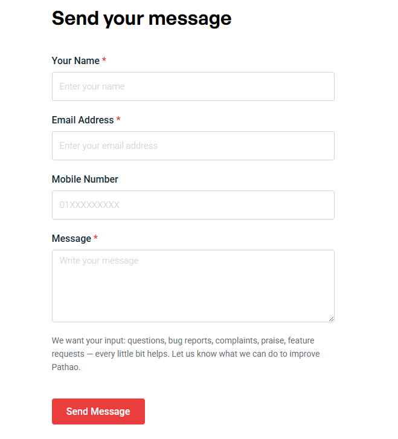
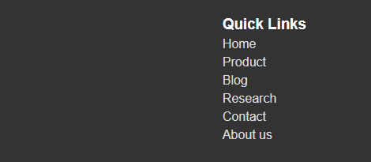
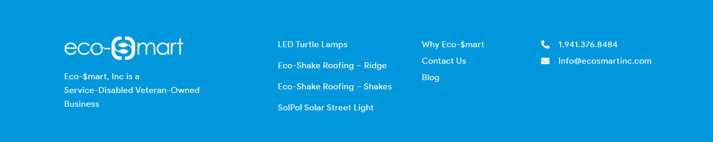

Our page

Bhok Lagyo's page
Our EcoMart homepage
In the section of what our customer say there are 3 of our most loyal customers with their images and their review's. It is functional as when we press the read review button it showcases what our our customers say.It is eye catching to our new customer's and our new customer's could know our website better.
What we took from Bhok Lagyo
Pretty much the whole vibe: The what our customer says section gives as an idea to create a section that helps other new customer to get reviews of the website. It makes us feel the importance of this section in our website and how it can potentially increase our sales.
The difference between bhok lagyo page and our page is that we have created a read review button which is clickable and user can easily read the review by simply clicking them.

Our page

Bhok Lagyo's page
Our products page
This is the section where customers helps to buy and knew about the product. This section is titled "Our Products" showing products like body wash, water bottle, soap and many more each with a real image, it's price in NPR, and a big functional “Add to cart” button. Feels straightforward and focused on healthy living, green life.
What we took from Bhok lagyo
The product cards in a perfect structure, it's photo , name , it's price in npr . We influenced the way they make browsing feel humanly and visual, but swapped in our organic Nepali eco-store .
The difference is that our product contain add to cart button which is clickable and user can know the discription about respective product by clicking add to cart button.

Our page

Pathao's page
Our Contact Us page
We created a functional Contact us page which make customer's easy to directly contact us through this form. It includes 5 sections which includes your name, email, contact number,subject and contact us.It alerts user whe the credentials are not met. When the credentials are submitted it gives message"Message sent successfully."
What we took from Pathao
patho page contain a structural contact page which is for customer through which users can directly contact with pathao services. we have also created a contact page with similar layout throgh which customers can connect with us and begin new journey of shopping eo-friendly products.

Our page

Eco mart's page
Quick links of our page
we have mentioned a qucik links in footer. by using these quick links user can redirect from one page to another page easily.It contains every page of websites
similarity to eco-mart
eco-mart website also contains a quick links from which we take a references.
The differnce between our page and their page is that we have also mentioned other webpages of our website and the background colour is also different.